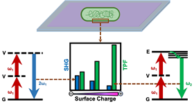
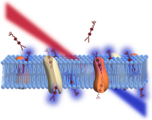
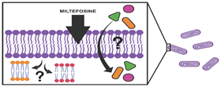
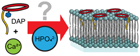
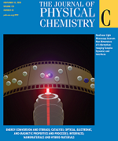
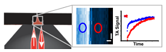
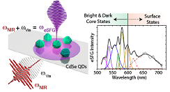
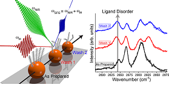
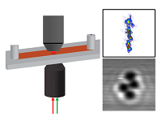
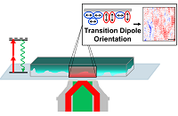

publications
- Bacterial Cell Wall-Induced Aggregation of Nile Blue
D. Kumar, A. W. Jeffries, K. L. Pulver, S. Bhat, J. L. Baxter, and T. R. Calhoun
J. Chem. Phys. (accepted, 2026) - Beyond the bulk: second harmonic generation imaging of bacterial membranes
S. Bhat and T. R. Calhoun
Proc. SPIE 14219, Ultrafast Nonlinear Imaging and Spectroscopy XIV (2026) 
Nonlinear Imaging of Bacterial Membranes during Adhesion
S. Bhat, E. F. Page, E. M. Campbell, and T. R. Calhoun
J. Phys. Chem. B 130, 9764 (2026)
Second harmonic scattering investigation of bacterial efflux induced by the antibiotic tetracycline
E. F. Page, M. F. Blackmon, and T. R. Calhoun
J. Chem. Phys. 161, 174710 (2024)- Probing bacterial membranes with polarization-resolved second harmonic scattering
E. F. Page, M. J. Blake, and T. R. Calhoun
Proc. SPIE 13139, Ultrafast Nonlinear Imaging and Spectroscopy XII (2024) 
Miltefosine Impacts Small Molecule Transport in Gram-Positive Bacteria
M. J. Blake, E. F. Page, M. E. Smith and T. R. Calhoun
RSC Chem. Biol. 5, 981 (2024)- Facilitating flip-flop: Structural tuning of molecule-membrane interactions in living bacteria
M. J. Blake, H. B. Castillo, A. E. Curtis and T. R. Calhoun
Biophys. J. 122, 1735 (2023) - Monitoring membranes: The exploration of biological bilayers with second harmonic generation
E. F. Page, M. J. Blake, G. A. Foley and T. R. Calhoun
Chem. Phys. Rev. 3, 041307 (2022)
Highlighted in AIP Scilight: Illuminating cell membranes by mixing light - Small Molecule Sorting: A Fluorescence Study of Microemulsions
M. R. Hassan, B. A. Colon, J. Russell and T. R. Calhoun
J. Phys. Chem. B 126, 4990 (2022)

Phosphate Ions Alter the Binding of Daptomycin to Living Bacterial Cell Surfaces
L. N. Miller, M. J. Blake, E. F. Page, H. B. Castillo and T. R. Calhoun
ACS Infect. Dis. 7, 3088 (2021)
Leaving the Limits of Linearity for Light Microscopy
M. J. Blake, B. A. Colon, and T. R. Calhoun
J. Phys. Chem. C 124, 24555 (2020)
(invited perspective)
Total Internal Reflection Transient Absorption Microscopy: An Online Detection Method for Microfluidics
B. A. Colon, M. R. Hassan, A. Saleheen, C. A. Baker, and T. R. Calhoun
J. Phys. Chem. A 124, 4160 (2020)
(part of the Time-Resolved Microscopy Virtual Special Issue)- Second Harmonic Generation Spectroscopy of Membrane Probe Dynamics in Gram-Positive Bacteria
L. N. Miller, W. T. Brewer, J. D. Williams, E. M. Fozo, and T. R. Calhoun
Biophys. J. 117, 1419 (2019) 
Energetics at the Surface: Direct Optical Mapping of Bulk and Interfacial Electronic Structure in CdSe Quantum Dots using Broadband Electronic Sum Frequency Generation Microspectroscopy
B. R. Watson, B. Doughty, and T. R. Calhoun
Nano Lett. 19, 6157 (2019)- A new approach to vibrational sum frequency generation spectroscopy using near infrared pulse shaping
A. U. Chowdhury, B. R. Watson, Y.-Z. Ma, R. L. Sacci, D. A. Lutterman, T. R. Calhoun, and B. Doughty
Rev. Sci. Instrum. 90, 033106 (2019) 
Probing ligand removal and ordering at quantum dot surfaces using vibrational sum frequency generation spectroscopy
B. R Watson, Y.-Z. Ma, J. F. Cahill, B. Doughty and T. R. Calhoun
J. Colloid. Interface Sci. 537, 389 (2019)
- Chemical nature of ferroelastic twin domains in CH3NH3PbI3 perovskite
Y. Liu, L. Collins, R. Proksch, S. Kim, B. R. Watson, B. Doughty, T. R. Calhoun, M. Ahmadi, A. V. Ievlev, S. Jesse, S. T. Retterer, A. Belianinov, K. Xiao, J. Huang, B. G. Sumpter, S. V. Kalinin, B. Hu, and O. S. Ovchinnikova
Nat. Mater. 11, 1013 (2018) - Shedding light on surface effects: nonlinear probes of complex materials
B. R. Watson, B. Doughty, and T. R. Calhoun
Proc. SPIE 10638, Ultrafast Bandgap Photonics III (2018) - Flexible approach to vibrational sum-frequency generation using shaped near-infrared light
A. U. Chowdhury, F. Liu, B. R. Watson, R. Ashkar, J. Katsaras, C. P. Collier, D. A. Lutterman, Y.-Z. Ma, T. R. Calhoun, and B. Doughty
Opt. Lett. 43, 2038 (2018) 
Compressed supercontinuum probe for transient absorption microscopy
K. Higgins and T. R. Calhoun
Opt. Lett. 43, 1750 (2018)

Elucidation of perovskite film micro-orientations using two-photon total internal reflectance fluorescence microscopy
B. R. Watson, B. Yang, K. Xiao, Y.-Z. Ma, B. Doughty, and T. R. Calhoun
J. Phys. Chem. Lett. 6, 3283 (2015)
Prior to the University of Tennessee
- Elucidation of the timescales and origins of quantum electronic coherence in LHCII
G. S. Schlau-Cohen, A. Ishizaki, T. R. Calhoun, N. S. Ginsberg, M. Ballottari, R. Bassi, and G. R. Fleming
Nature Chem. 4, 389 (2012) - Two-dimensional electronic spectroscopy reveals the dynamics of phonon-mediated excitation pathways in semiconducting
single-walled carbon nanotubes
M. W. Graham, T. R. Calhoun, A. A. Green, M. C. Hersam, and G. R. Fleming
Nano. Lett. 12, 813 (2012) - The separation of overlapping transitions in β-carotene with broadband 2D electronic spectroscopy
T. R. Calhoun, J. A. Davis, M. W. Graham, and G. R. Fleming
Chem. Phys. Lett. 523, 1 (2012) - Quantum coherence in photosynthetic complexes
T. R. Calhoun and G. R. Fleming
Phys. Stat. Sol. b 2011, 833 (2011) - Ultrafast optical multidimensional spectroscopy without interferometry
J. A. Davis, T. R. Calhoun, K. A. Nugent, and H. M. Quiney
J. Chem. Phys. 134, 024504 (2011) - Spectroscopic elucidation of uncoupled transition energies in the major photosynthetic light-harvesting complex, LHCII
G. S. Schlau-Cohen, T. R. Calhoun, N. S. Ginsberg, M. Ballottari, R. Bassi, and G. R. Fleming
Proc. Natl. Acad. Sci. USA 107, 13276 (2010) - Quantum coherence and its interplay with protein dynamics in photosynthetic electronic energy transfer
A. Ishizaki, T. R. Calhoun, G. S. Schlau-Cohen, and G. R. Fleming
Phys. Chem. Chem. Phys. 12, 7319 (2010) - Quantum coherence enabled determination of the energy landscape in Light Harvesting Complex II
T. R. Calhoun, N. S. Ginsberg, G. S. Schlau-Cohen, Y.-C. Cheng, M. Ballottari, R. Bassi, and G. R. Fleming
J. Phys. Chem. B 113, 16291 (2009) - Pathways of energy flow in LHCII from two-dimensional electronic spectroscopy
G. S. Schlau-Cohen, T. R. Calhoun, N. S. Ginsberg, E. L. Read, M. Ballottari, R. Bassi, and G. R. Fleming
J. Phys. Chem. B 113, 15352 (2009) - Electronic coherence transfer in photosynthetic complexes and its signature in optical spectroscopy
T. Mancal, L. Valkunas, E. L. Read, G. S. Engel, T. R. Calhoun, and G. R. Fleming
Spectroscopy - An International Journal 22, 199 (2008) - Cross-peak specific two-dimensional electronic spectroscopy
E. L Read, G. S. Engel, T. R. Calhoun, T. Mancal, T. K. Ahn, R. E. Blankenship, and G. R. Fleming
Proc. Natl. Acad. Sci. USA 104, 14203 (2007) - Evidence for wavelike energy transfer through quantum coherence in photosynthetic systems
G. S. Engel, T. R. Calhoun, E. L. Read, T. K. Ahn, T. Mancal, Y.-C. Cheng, R. E. Blankenship, and G. R. Fleming
Nature 446, 782 (2007) - Dynamic solvation in room-temperature ionic liquids
P. K. Chowdhury, M. Halder, L. Sanders, T. Calhoun, J. L. Anderson, D. W. Armstrong, X. Song, and J. W. Petrich
J. Phys. Chem. B 108, 10245 (2004) - Thieno[3,4-b]pyrazines: synthesis, structure, and reactivity
D. D. Kenning, K. A. Mitchell, T. R. Calhoun, M. R. Funfar, D. J. Sattler, and S. C. Rasmussen
J. Org. Chem. 67, 9073 (2002)